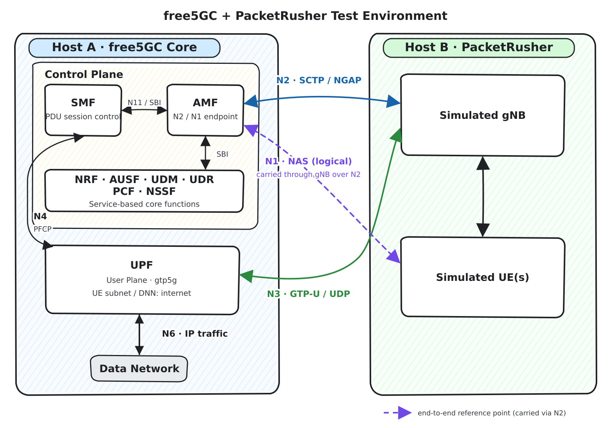
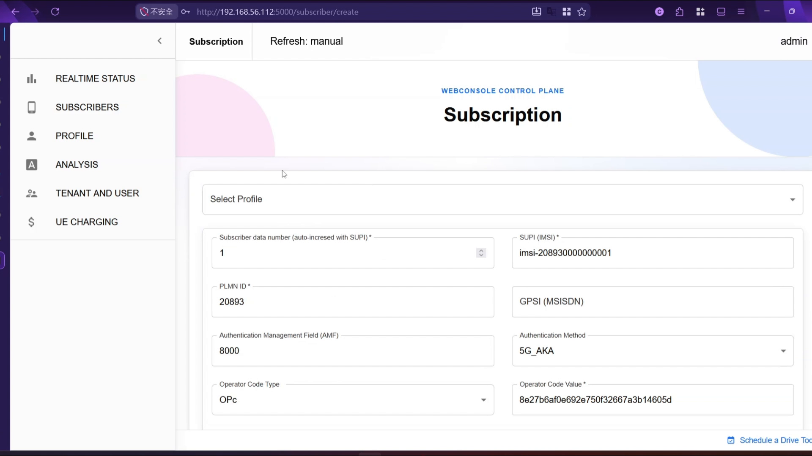
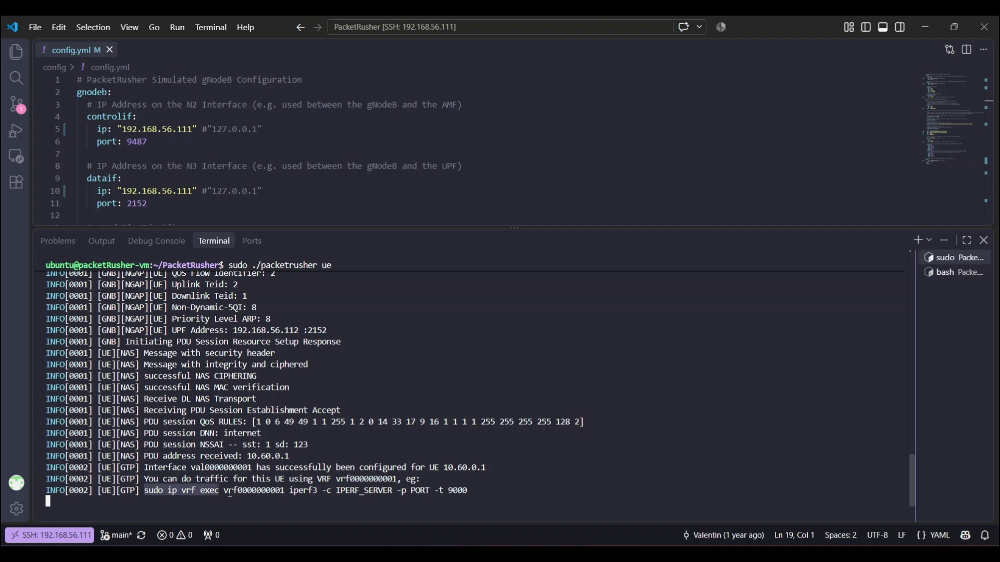
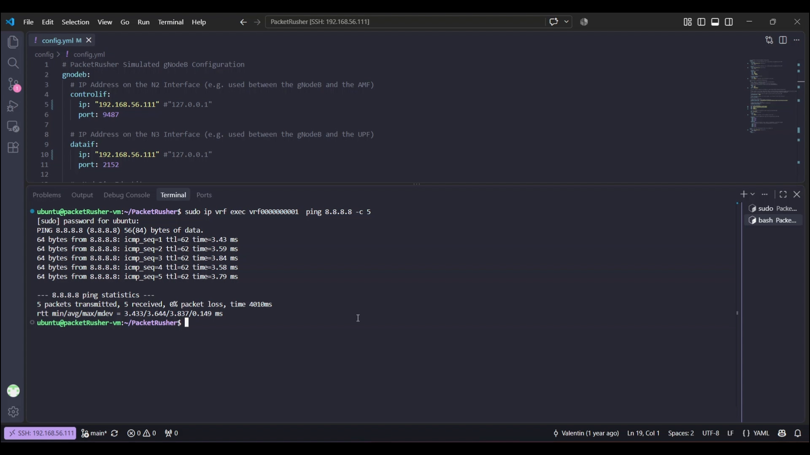
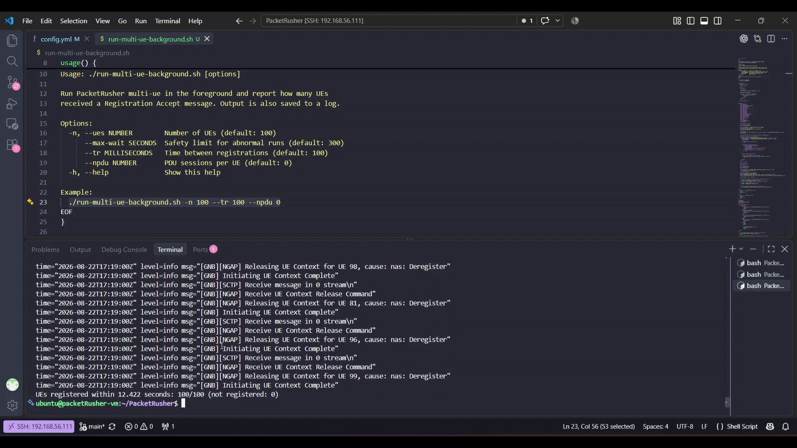
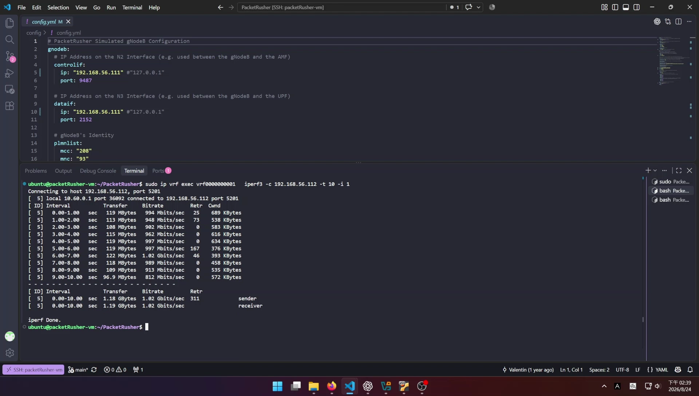
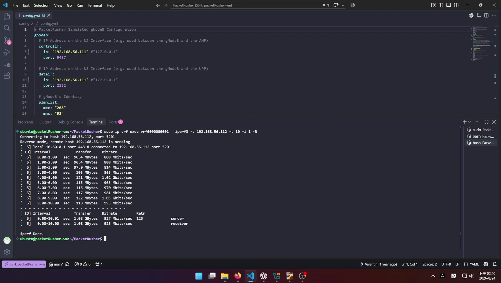

Building and Testing a free5GC and PacketRusher Lab
Note
Author: Kai-Hung, Hu
Date: 2026/07/29
Introduction
This tutorial builds a small 5G lab with free5GC as the core network and PacketRusher as the simulated gNodeB and UE. The two components run on separate virtual machines connected through a VirtualBox host-only network.
By the end of the tutorial, you will be able to:
- install and build PacketRusher;
- connect a simulated gNodeB and UE to free5GC;
- register a subscriber and establish a PDU session;
- verify user-plane connectivity with
ping; - measure the registration time of multiple UEs;
- run an
iperf3bandwidth test and distinguish the underlay result from GTP-U user-plane throughput.
Installing the free5GC VM itself is outside the scope of this article. If you do not already have a working free5GC installation, follow the free5GC User Guide first.
Architecture

The lab contains two hosts:
- Host A — free5GC Core: the AMF terminates the N2 signaling interface from the RAN, while the UPF terminates the N3 user-plane interface and forwards UE traffic toward the Data Network (DN) over N6. The SMF controls the UPF over N4 using PFCP.
- Host B — PacketRusher: PacketRusher simulates both the gNodeB and one or more UEs. The gNodeB exchanges NGAP over SCTP with the AMF on N2 and GTP-U over UDP with the UPF on N3. UE NAS signaling is carried transparently through the simulated gNodeB to the AMF.
This tutorial uses the following addressing plan:
Both VMs use the following specification:
- Platform: VirtualBox
- OS: Ubuntu 24.04
- CPUs: 4
- RAM: 4096 MB
The IP addresses listed below are assigned to the VMs' host-only adapter interfaces.
| Component | Address or value | Purpose |
|---|---|---|
| PacketRusher VM | 192.168.56.111 |
gNodeB N2 and N3 endpoint |
| free5GC VM | 192.168.56.112 |
AMF N2 and UPF N3 endpoint |
Before continuing, verify that the two VMs can reach each other. On the free5GC VM, the AMF and UPF configurations must bind N2 and N3 to 192.168.56.112, and the SMF configuration must bind N3 to 192.168.56.112. Any firewall between the VMs must allow SCTP port 38412 and UDP port 2152.
# Run on the PacketRusher VM
ping -c 3 192.168.56.112
ip route get 192.168.56.112
Install PacketRusher
PacketRusher provides an official Installation Wiki. At the time of writing, its documented requirements include Ubuntu 20.04–24.04, Linux kernel 5.4 or newer, Go 1.23 or newer, root privileges, and Secure Boot disabled for the custom gtp5g kernel module. PacketRusher is not currently supported on Windows or Docker.
The following copy-and-paste block gathers the dependency installation, Go installation, repository download, gtp5g build, and PacketRusher build into one Bash session:
Warning
This block replaces an existing Go installation under /usr/local/go. Review it before running if that location contains a Go version you need to keep.
#!/usr/bin/env bash
set -euo pipefail
# Install build dependencies and headers for the running kernel.
sudo apt update
sudo apt install -y \
build-essential \
linux-headers-generic \
make \
git \
wget \
tar \
"linux-modules-extra-$(uname -r)"
# Install Go.
wget https://go.dev/dl/go1.24.1.linux-amd64.tar.gz && sudo rm -rf /usr/local/go && sudo tar -C /usr/local -xzf go1.24.1.linux-amd64.tar.gz
# Add go binary to the executable PATH variable.
export PATH=$PATH:/usr/local/go/bin
source $HOME/.profile
# Download PacketRusher source code.
git clone https://github.com/HewlettPackard/PacketRusher
# Enter the PacketRusher directory, save its path in $HOME/.profile, and load it into the current shell.
cd PacketRusher && echo "export PACKETRUSHER=$PWD" >> $HOME/.profile && source $HOME/.profile
# Build and install the gtp5g kernel module.
cd "$PACKETRUSHER/lib/gtp5g"
make clean && make -j && sudo make install
# Build the PacketRusher CLI.
cd $PACKETRUSHER
go mod download
go build cmd/packetrusher.go
./packetrusher --help
If modprobe gtp5g fails after a kernel update, install the headers and linux-modules-extra package for the new running kernel, then rebuild the module. A Secure Boot policy can also prevent an unsigned custom kernel module from loading.
Configure the Simulated gNodeB and UE
PacketRusher reads its gNodeB, UE, and AMF settings from $PACKETRUSHER/config/config.yml. The example below is the configuration used in this lab.
The IP addresses and subscriber credentials below are examples for an isolated lab. Replace them with values that match your own environment.
# PacketRusher Simulated gNodeB Configuration
gnodeb:
# IP address on N2 between the gNodeB and AMF
controlif:
ip: "192.168.56.111"
port: 9487
# IP address on N3 between the gNodeB and UPF
dataif:
ip: "192.168.56.111"
port: 2152
# gNodeB identity
plmnlist:
mcc: "208"
mnc: "93"
tac: "000001"
gnbid: "000008"
# Supported slice
slicesupportlist:
sst: "01"
sd: "010203" # Optional; remove it if SD is not used.
# PacketRusher Simulated UE Configuration
ue:
# IMSI/SUPI identity
# SUPI in this example: imsi-208930000000001
hplmn:
mcc: "208"
mnc: "93"
msin: "0000000001"
# SUCI configuration
# SUCI with the null scheme:
# suci-0-208-93-0000-0-0-0000000001
routingindicator: "0000"
protectionScheme: 0
# Ignored when protectionScheme is 0, but retained for other schemes.
homeNetworkPublicKey: "5a8d38864820197c3394b92613b20b91633cbd897119273bf8e4a6f4eec0a650"
homeNetworkPublicKeyID: 1
# SIM credentials; these must match the free5GC subscriber.
key: "8baf473f2f8fd09487cccbd7097c6862"
opc: "8e27b6af0e692e750f32667a3b14605d"
amf: "8000"
# Same numeric SQN as WebConsole value 000000000023.
sqn: "00000023"
# Requested PDU session
dnn: "internet"
snssai:
sst: "01"
sd: "010203" # Optional; remove it if SD is not used.
# UE security capabilities advertised to the AMF
integrity:
nia0: false
nia1: false
nia2: true
nia3: false
ciphering:
# NEA0 keeps NAS messages readable in Wireshark for debugging.
nea0: true
nea1: false
nea2: true
nea3: false
# AMFs that PacketRusher will try to reach
amfif:
- ip: "192.168.56.112"
port: 38412
logs:
level: 4
Keep values with leading zeroes quoted. In particular:
gnodeb.controlif.ipandgnodeb.dataif.ipmust be addresses on the PacketRusher VM;amfif.ipmust be the free5GC AMF's reachable N2 address;- MCC, MNC, TAC, DNN, SST, and SD must match the corresponding free5GC configuration; and
- SUPI,
key,opc,amf, andsqnmust match the subscriber created in WebConsole.
For a detailed explanation of every field, see the PacketRusher Configuration Wiki.
Start free5GC and Provision the Subscriber
1. Start the core network
On the free5GC VM, start all network functions and leave the terminal running:
cd ~/free5gc
./run.sh
Do not start PacketRusher until the AMF and UPF are ready. In particular, confirm that the SMF has established its PFCP association with the UPF and that the AMF is listening on the configured N2 address.
2. Create a matching subscriber in WebConsole
If WebConsole is not already running, start it in another terminal using the command provided by your free5GC installation. A current source installation created by the quick-setup guide uses:
cd ~/free5gc/webconsole
go run server.go
Open http://192.168.56.112:5000, sign in, and select SUBSCRIBERS → CREATE. The official Create Subscriber via WebConsole guide documents the complete workflow.
Enter values that match config.yml:
| WebConsole field | Value |
|---|---|
| SUPI (IMSI) | imsi-208930000000001 |
| PLMN ID | 20893 |
| Authentication Method | 5G_AKA |
| Authentication Management Field (AMF) | 8000 |
| Operator Code Type | OPc |
| Operator Code Value | 8e27b6af0e692e750f32667a3b14605d |
| Permanent Authentication Key (K) | 8baf473f2f8fd09487cccbd7097c6862 |
| SQN | 000000000023 |
| SST / SD | 1 / 010203 |
| DNN | internet |

WebConsole displays SQN as a 12-digit (48-bit) hexadecimal value. Its 000000000023 value is the left-padded form of PacketRusher's 00000023 setting.
The K and OPc values above are test credentials. Do not reuse production SIM credentials in a public or shared lab.
Test 1: Single-UE Registration and Connectivity
On the PacketRusher VM, start the simulated gNodeB and UE from the repository root:
cd "$PACKETRUSHER"
sudo ./packetrusher ue
A successful run should show a Registration Accept followed by a PDU Session Establishment Accept. PacketRusher then prints the assigned UE address and creates a Linux VRF for that UE. In this lab, the UE received 10.60.0.1 and PacketRusher created vrf0000000001.

Keep PacketRusher running. Open another shell on the PacketRusher VM and send traffic from the UE's VRF:
# Replace <vrf_name> with the name printed by PacketRusher.
sudo ip vrf exec <vrf_name> ping -c 5 8.8.8.8
# Example from this lab:
sudo ip vrf exec vrf0000000001 ping -c 5 8.8.8.8

Successful replies confirm that the UE can send user-plane packets through the PacketRusher GTP tunnel, the free5GC UPF, and the N6 data network. If registration succeeds but ping fails, check UPF forwarding, N6 routing/NAT, IP forwarding, and firewall rules.
Test 2: Multi-UE Registration Time
PacketRusher's multi-ue command increments the MSIN for each simulated UE. Before running the 100-UE test with base MSIN 0000000001, use the free5GC WebConsole to create 100 subscriber records for the sequential IMSIs. Use the same PLMN, K, OPc, AMF, SQN, DNN, and slice settings for all subscribers. Stop the single-UE process first so that it does not compete for the same subscriber identity.
This article uses a helper script named run-multi-ue-background.sh that:
- starts
packetrusher multi-ue; - counts
Receive Registration Acceptmessages; - stops when every UE registers, the result becomes stable, or the safety timeout expires;
- saves the complete output to a timestamped log; and
- prints the registered and unregistered totals with elapsed wall-clock time.
Save the following script as run-multi-ue-background.sh in the PacketRusher repository root:
#!/usr/bin/env bash
set -u
SCRIPT_DIR=$(cd -- "$(dirname -- "${BASH_SOURCE[0]}")" && pwd)
PACKETRUSHER_BIN="$SCRIPT_DIR/packetrusher"
usage() {
cat <<'EOF'
Usage: ./run-multi-ue-background.sh [options]
Run PacketRusher multi-ue in the foreground and report how many UEs
received a Registration Accept message. Output is also saved to a log.
Options:
-n, --ues NUMBER Number of UEs (default: 100)
--max-wait SECONDS Safety limit for abnormal runs (default: 300)
--tr MILLISECONDS Time between registrations (default: 100)
--npdu NUMBER PDU sessions per UE (default: 0)
-h, --help Show this help
Example:
./run-multi-ue-background.sh -n 100 --tr 100 --npdu 0
EOF
}
is_non_negative_integer() {
[[ "$1" =~ ^[0-9]+$ ]]
}
controller() {
local stop_file=$1
shift
local child_pid
"$@" &
child_pid=$!
stop_child() {
kill -INT "$child_pid" 2>/dev/null || true
}
trap stop_child INT TERM
while kill -0 "$child_pid" 2>/dev/null; do
if [[ -e "$stop_file" ]]; then
stop_child
break
fi
sleep 0.1
done
wait "$child_pid"
}
worker() {
local total=$1
local max_wait=$2
local registration_interval=$3
local pdu_sessions=$4
local log_file=$5
local quiet_period=5
local control_dir
local stop_file
local process_pid
local exit_status
local launched=0
local registered=0
local previous_registered=0
local not_registered
local all_started=false
local stable_since=0
local start_ms
local start_seconds
local now
local elapsed_ms
local elapsed_seconds
local message
cd "$SCRIPT_DIR" || exit 1
start_ms=$(date +%s%3N)
start_seconds=$(date +%s)
control_dir=$(mktemp -d /tmp/packetrusher-control.XXXXXX)
stop_file="$control_dir/stop"
trap 'touch "$stop_file" 2>/dev/null || true' EXIT
trap 'exit 130' INT TERM
: >"$log_file"
"$SCRIPT_DIR/run-multi-ue-background.sh" --controller "$stop_file" "$PACKETRUSHER_BIN" multi-ue -n "$total" --tr "$registration_interval" --nPdu "$pdu_sessions" 2>&1 | tee -a "$log_file" &
process_pid=$!
# Finish immediately when all UEs register. After all registration
# attempts have started, a five-second period with no new Registration
# Accept is treated as a stable partial result.
while kill -0 "$process_pid" 2>/dev/null; do
launched=$(grep -cF "[TESTER] TESTING REGISTRATION USING IMSI " "$log_file" || true)
registered=$(grep -cF "[UE][NAS] Receive Registration Accept" "$log_file" || true)
now=$(date +%s)
if [[ $registered -ge $total ]]; then
break
fi
if [[ $launched -ge $total ]]; then
if [[ $all_started == false ]]; then
all_started=true
stable_since=$now
elif [[ $registered -ne $previous_registered ]]; then
stable_since=$now
elif ((now - stable_since >= quiet_period)); then
break
fi
fi
previous_registered=$registered
if ((now - start_seconds >= max_wait)); then
echo "Safety limit of ${max_wait} seconds reached." >>"$log_file"
break
fi
sleep 0.2
done
touch "$stop_file"
wait "$process_pid"
exit_status=$?
trap - EXIT INT TERM
rm -f "$stop_file"
rmdir "$control_dir"
registered=$(grep -cF "[UE][NAS] Receive Registration Accept" "$log_file" || true)
if [[ $registered -gt $total ]]; then
registered=$total
fi
not_registered=$((total - registered))
elapsed_ms=$(($(date +%s%3N) - start_ms))
printf -v elapsed_seconds "%d.%03d" "$((elapsed_ms / 1000))" "$((elapsed_ms % 1000))"
message="UEs registered within ${elapsed_seconds} seconds: ${registered}/${total} (not registered: ${not_registered})"
echo "$message" | tee -a "$log_file"
# This works for a logged-in Linux desktop. On a headless/SSH system, the
# result remains available in the log file and in the system log.
if command -v notify-send >/dev/null 2>&1; then
notify-send "PacketRusher" "$message" >/dev/null 2>&1 || true
fi
if command -v logger >/dev/null 2>&1; then
logger -t packetrusher "$message" || true
fi
if [[ $exit_status -ne 0 && $exit_status -ne 130 ]]; then
echo "PacketRusher exited with status ${exit_status}; check ${log_file}"
fi
}
if [[ ${1:-} == '--controller' ]]; then
shift
controller "$@"
exit $?
fi
if [[ ${1:-} == '--worker' ]]; then
shift
worker "$@"
exit 0
fi
total=100
max_wait=300
registration_interval=100
pdu_sessions=0
while [[ $# -gt 0 ]]; do
case "$1" in
-n|--ues)
[[ $# -ge 2 ]] || { echo "Missing value for $1" >&2; exit 2; }
total=$2
shift 2
;;
-d|--duration|--max-wait)
[[ $# -ge 2 ]] || { echo "Missing value for $1" >&2; exit 2; }
max_wait=$2
shift 2
;;
--tr)
[[ $# -ge 2 ]] || { echo "Missing value for $1" >&2; exit 2; }
registration_interval=$2
shift 2
;;
--npdu)
[[ $# -ge 2 ]] || { echo "Missing value for $1" >&2; exit 2; }
pdu_sessions=$2
shift 2
;;
-h|--help)
usage
exit 0
;;
*)
echo "Unknown option: $1" >&2
usage >&2
exit 2
;;
esac
done
if ! is_non_negative_integer "$total" || [[ $total -eq 0 ]]; then
echo 'UE count must be a positive integer.' >&2
exit 2
fi
if ! is_non_negative_integer "$max_wait" || [[ $max_wait -eq 0 ]]; then
echo 'Maximum wait must be a positive integer.' >&2
exit 2
fi
if ! is_non_negative_integer "$registration_interval"; then
echo 'Registration interval must be a non-negative integer.' >&2
exit 2
fi
if ! is_non_negative_integer "$pdu_sessions" || [[ $pdu_sessions -gt 16 ]]; then
echo 'PDU session count must be an integer from 0 to 16.' >&2
exit 2
fi
if [[ ! -x "$PACKETRUSHER_BIN" ]]; then
echo "PacketRusher executable not found: $PACKETRUSHER_BIN" >&2
exit 1
fi
timestamp=$(date +'%Y%m%d-%H%M%S')
log_file="$SCRIPT_DIR/packetrusher-${timestamp}.log"
printf "Log: %s\n" "$log_file"
worker "$total" "$max_wait" "$registration_interval" "$pdu_sessions" "$log_file"
Make it executable and run it:
cd "$PACKETRUSHER"
chmod +x run-multi-ue-background.sh
./run-multi-ue-background.sh \
--ues 100 \
--tr 100 \
--npdu 0 \
--max-wait 300
The options used here mean:
--ues 100: launch 100 UEs;--tr 100: wait 100 ms between registration starts;--npdu 0: test registration only, without creating PDU sessions; and--max-wait 300: stop an abnormal run after 300 seconds.
The recorded run completed with the following summary:
UEs registered within 12.422 seconds: 100/100 (not registered: 0)

This is an example result, not a universal performance claim. It depends on VM resources, logging level, core-network load, database performance, and the registration interval.
Test 3: Bandwidth with iperf3
This test measures end-to-end user-plane throughput through the PacketRusher UE's GTP-U tunnel. The iperf3 client must run inside the UE VRF; running it directly on the PacketRusher VM would measure only the VM underlay network.
Install iperf3
Install iperf3 on both the free5GC VM and the PacketRusher VM:
sudo apt update
sudo apt install -y iperf3
Start the server on the free5GC VM
Bind the iperf3 server to the free5GC VM address:
iperf3 -s -B 192.168.56.112
The server listens on TCP port 5201 by default. If iperf3 reports that the address is already in use, stop the existing iperf3 server or continue using that server instance.
Start the PacketRusher UE
On the PacketRusher VM, start a simulated UE and keep this process running:
cd "$PACKETRUSHER"
sudo ./packetrusher ue
After registration and PDU session establishment succeed, note the VRF name printed by PacketRusher. In this example, the VRF is vrf0000000001 and the UE address is 10.60.0.1. Open another shell on the PacketRusher VM for the bandwidth commands below.
Uplink: UE to free5GC VM
Run the iperf3 client inside the UE VRF. Replace vrf0000000001 with the VRF name from your PacketRusher output if it is different:
sudo ip vrf exec vrf0000000001 \
iperf3 -c 192.168.56.112 -t 10 -i 1
The client sends traffic from the simulated UE toward the free5GC VM. In the recorded test, the connection uses the UE address 10.60.0.1 and reaches approximately 1.02 Gbit/s.

Downlink: free5GC VM to UE
Repeat the test with -R (reverse mode):
sudo ip vrf exec vrf0000000001 \
iperf3 -c 192.168.56.112 -t 10 -i 1 -R
In reverse mode, the server on the free5GC VM sends traffic back to the client inside the UE VRF. The recorded test reports approximately 927 Mbit/s at the sender and 925 Mbit/s at the receiver.

The address shown after local should be a UE address such as 10.60.0.1. If it is the PacketRusher VM address (192.168.56.111), the command did not use the UE VRF and measured only the underlay path. Throughput varies with VM resources, CPU scheduling, logging level, MTU, and host-network configuration, so treat these figures as example results rather than universal performance limits.
Troubleshooting Checklist
| Symptom | What to check |
|---|---|
| SCTP/NGAP connection fails | amfif.ip, AMF N2 bind address, SCTP port 38412, VM routing, and firewall rules |
| Registration is rejected | SUPI, MCC/MNC, K, OPc, AMF, SQN, and Authentication Method in WebConsole |
| PDU session is rejected | DNN, SST, SD, SMF selection, and subscriber slice configuration |
gtp5g does not load |
Running-kernel headers, linux-modules-extra, Secure Boot, and a rebuild after kernel upgrades |
Registration succeeds but ping fails |
The correct UE VRF, UPF/N6 routing, NAT, IP forwarding, and DNS-independent testing with 8.8.8.8 |
iperf3 server sees source 192.168.56.111 |
The client ran on the underlay; rerun it with sudo ip vrf exec <vrf_name> ... |
| Some multi-UE registrations fail | Sequential subscriber provisioning, AMF/UDM logs, MongoDB performance, registration interval, and the saved PacketRusher log |
Conclusion
You now have a repeatable two-VM environment in which PacketRusher connects to free5GC over N2 and N3. The single-UE test validates registration, PDU session establishment, and Internet reachability; the multi-UE script reports registration completion time; and the iperf3 procedure separates raw VM-network capacity from actual GTP-U user-plane throughput.
Reference
- free5GC Repository
- free5GC User Guide
- free5GC Quick Setup Guide
- Create Subscriber via WebConsole
- PacketRusher Repository
- PacketRusher Installation Wiki
- PacketRusher Configuration Wiki
- iperf3 Documentation
- PacketRusher: A New UE/gNB Simulator and CP/UP Load Tester
About
Hello! I'm Kai-Hung Hu. I hope this blog post has been informative. If you have ideas for further discussion, please don't hesitate to get in touch.
Connect with Me
- GitHub: carlhus